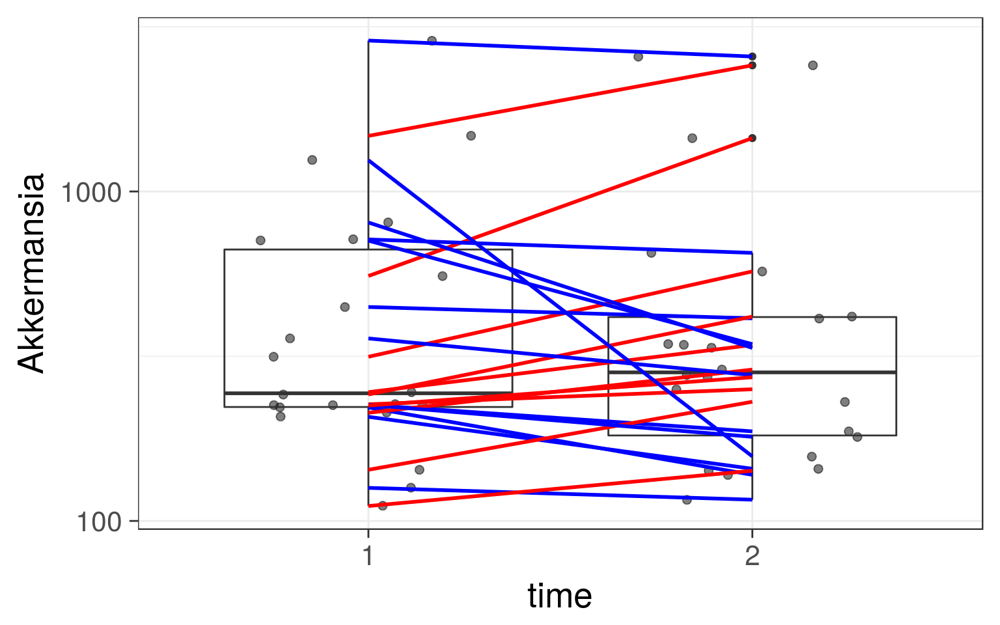

Load example data:
# Load libraries
library(microbiome)
library(ggplot2)
library(dplyr)
# Probiotics intervention example data
data(peerj32) # Source: https://peerj.com/articles/32/
pseq <- peerj32$phyloseq # Rename the example dataAbundance boxplot
p <- boxplot_abundance(pseq, x = "time", y = "Akkermansia", line = "subject", color = "gender") + scale_y_log10()
print(p)
Test individual taxonomic group
# Get sample metadata
dfs <- meta(pseq)
# Add abundance as the signal to model
dfs$signal <- abundances(pseq)["Akkermansia", rownames(dfs)]
# Paired comparison
# with fixed group effect and random subject effect
library(lme4)## Loading required package: Matrix##
## Attaching package: 'Matrix'## The following object is masked from 'package:tidyr':
##
## expandout <- lmer(signal ~ group + (1|subject), data = dfs)
out0 <- lmer(signal ~ (1|subject), data = dfs)
comp <- anova(out0, out)## refitting model(s) with ML (instead of REML)pv <- comp[["Pr(>Chisq)"]][[2]]
print(pv)## [1] 0.4556962## [1] "ade4"
## [1] "compositions"
## [1] "MASS"
## [1] "moments"
## [1] "scales"
## [1] "tgp"
## [1] "WGCNA"
## [1] "diptest"
## [1] "FD"
## [1] "gcookbook"
## [1] "GGally"
## [1] "ggnet"
## [1] "Hmisc"
## [1] "hrbrthemes"
## [1] "igraph"
## [1] "intergraph"
## [1] "limma"
## [1] "lme4"
## [1] "netresponse"
## [1] "network"
## [1] "RColorBrewer"
## [1] "sna"
## [1] "SpiecEasi"
## [1] "tidyverse"
## [1] "viridis"